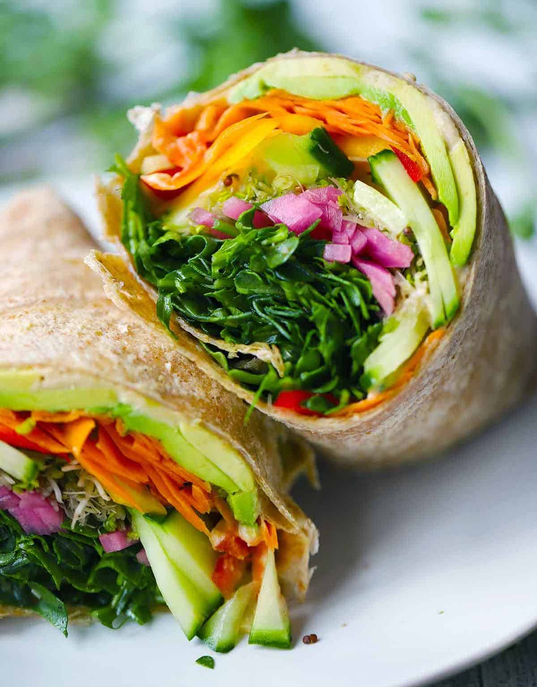

Vegetable Wraps

These veggie wraps are packed with protein and healthy fat to leave you feeling full and energized.
Ingredients
- Large tortilla (1)
- Avocado (1/2)
- Hummus (2 tbsp)
- Olive oil (1/2 tbsp)
- Balsamic vinegar (1 tsp)
- Greens (1 cup)
- Salt and pepper, to taste
- A mix of chopped/shredded veggies like carrots, cucumber, or bell pepper (1 cup)
- Red onion (2 tbsp, thinly sliced)
Instructions
- In a medium bowl, toss the greens with the olive oil, balsamic vinegar, salt, and pepper. Set aside.
-
Spread hummus on the center of the tortilla. Place the sliced avocado on top and sprinkle with salt and pepper.
Layer the veggies on top of the avocado.
- Add the dressed greens on top of everything.
- Wrap the sandwich like a burrito, and enjoy!